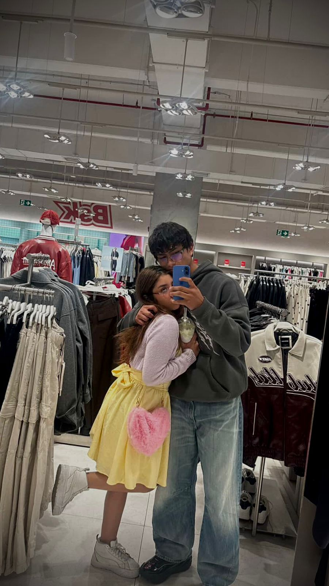
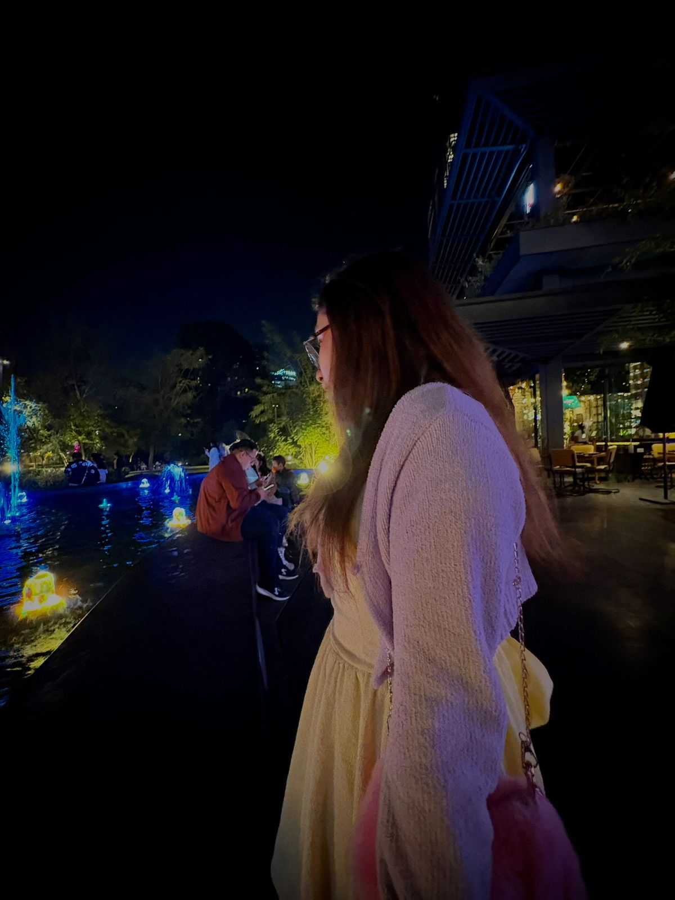
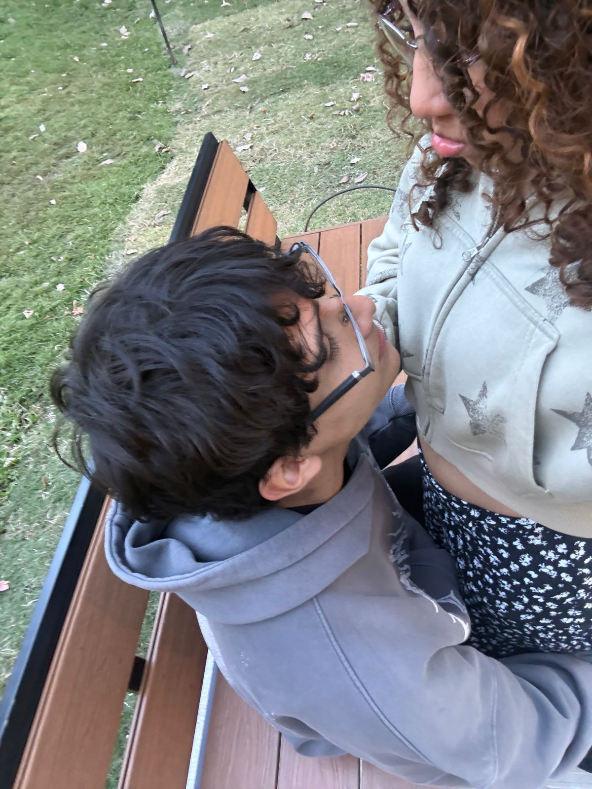

×


Nuestra primera cita 💜

Eres PERFECTA ✨

Mirada 💜
Me enamoré de ti desde el año pasado cuando te hablé por primera vez, ese día que estabas jugando volley y llegue a meterme pelandome todo el nabo todo, te aseguro que no me arrepiento ni me arrepentiré nunca de eso. Desde que empezamos a hablar supe que eres una niña bien, una niña que se merece todo lo bueno y bonito, una niña que aunque sé que no me había abierto su corazón al cien, quise conectar con él sin pensarlo dos veces. La manera en que me apoyaste cuando estaba trabajando fue gran parte del proceso para enamorarme de ti, porque supe que tú estarías ahí siempre, además que el tiempo que tenía libre siempre busqué dedicartelo a ti porque supe que tu mereces eso. Este año gracias a Diosito regresaste a mi vida y el pensamiento que tenía de ti nunca desapareció, al contrario mejoró y conforme hablamos mucho mucho, conecté contigo como nunca imaginé ya que me conformaba con ser solo tu amigo, nunca creí poder llegar a ser tu novio y ahora que lo soy, no me lo creo amor. Me enamoré de ti cuando vi que podía ser yo contigo siempre, que sin importar que dijera o hiciera, no me juzgarías porque sí, soy mucho mayor y casi todo el tiempo actuo como tal, pero contigo sentí esa comodidad de ser quien realmente soy. Me enamoré cuando supe que no tenía que ser el mejor en algo o el más fuerte para todo, cuando me di cuenta que eres una mujer fuerte, una mujer que siente con el corazón y que actúa de una manera ejemplar. La verdad es dificil decirte el momento o cómo me enamoré de ti porque actualmente me sigo enamorando de ti aún si eres mi novia y mi mejor amiga. Este proceso de amarte es lo mejor que me ha pasado, desde encontrarté hasta poder decirte actualmente amor esto y amor aquello...💜
Amor para mí eres muy perfecta. Toda tú eres lo que siempre soñé tener para mí amor, yo te dije que ya que yo no tengo un tipo en específico, si no que tú, toda tú eres ese espacio, tu silueta encaja perfecto en mi corazón. Eres perfecta de inicio a fin, me encanta cada partecita de ti, me encanta tu risita, me encanta tu miradita, me encanta cuando hablas, me encanta cuando callas, me encanta cuando caminas, me encanta cuando lloras de felicidad, me encanta tu cuerpo, pero me encanta mucho más tu corazoncito. A mis ojos eres perfecta de todas las formas posibles amor, está bien si no me crees pero tienes que saber que no importa cuando me cueste hacer que estés tranquila de que así es, yo me voy a esforzar. Desde que te conocí supe que eras especial y ahora que tengo el honor de decir que eres mi novia, mi persona favorita, mi mejor amiga y mi todo, puedo decir que mi mundo es perfecto porque ya estás tú. Tú llegaste a mi vida a arreglarla, hiciste que todo fuera más bonito hiciste que me enamorara de cada vuelta que tengo que dar así como me enamoré de las vueltas que dan tus ricitos. Hiciste que un mundo que olía a mierda, a dolor y a sagre, tuviera tu olorcito dulce, ese olorcito que calma cada uno de mis dolores. Hiciste que todo el ruido de la mierda que las personas me tiraban y la propia mierda que mi cabeza me tiraba, desapareciera y quedara tu vocecita sondando y diciendome que todo estará mejor. Hiciste que ya no viera el camino negro y perdido, me enseñaste a enamorarme del camino así como me enamoro del colorcito de tus ojitos. Por último tu luz, esa luz que llega a iluminar la vida de las personas en las que permanece fue completamente la razón por la que te dije y te diré que eres perfecta. Tu luz ilumina todo a su alrededor, esa luz hace que todo camino cobre sentido y ahora no quiero despegarme de ti, de tu luz y siempre que vea el camino nublado solo tengo claro que tengo que correr a tu luz, tengo que correr a ti. Eres perfecta en todo sentido amor...💜
Honestamente me enamoré de ti desde que te escuché hablarme por primera vez. Tu vocecita tenía algo que me hizo no dejar de pensarte, que me hizo querer buscarte y buscar una excusa por muy mínima que sea para llegarte. Cuando te pregunté si no querías pintar, ya me habías llamado mucho la atención y mi corazón hacía tucun tucun por ti, sería mentira decir que fue hasta este año porque desde el año pasado me había enculado de ti. La manera en que me apoyaste y me permitiste ser yo aún sin conocerme fue lo que me hizo click porque no hubo momento en que no pensara como acercarme a ti, además con lo que me ibas diciendo de ti me enamoré también. Me di cuenta de que eres una mujer que tiene un corazón muy puro y ahí fue cuando quise intentar ser la persona a quien se lo confiaras, además de lo bonita y lo qlona JAJA la verdad nunca logré sacarte de mi mente. Este año cuando volvimos a hablar sentí una conexión contigo que nunca creí sentir, cuando salimos el 14 mi corazón sintión que por fin podía estar en paz, mis cejas se relajaron y esa pinta de enojado estoy seguro que desapareció. No sabía que era en específico lo que me enamoró de ti y ahí supe que te amaba de la manera más pura posible. Fue la combinación de tus cejitas, tu naricita, tus manitas, tus ricitos, tu boquita, tu vocecita, tu altura, tu hunmor, tu corazón y muchas cosas más por las que me enamoré de ti. Si me preguntas sobre una en específico no te la podría contestar como quisieras y no porque no quiera, si no porque amo cada partecita de ti, amo todo lo que me has dejado conocer de ti y amo que me permitas estar a tu lado ya que cada día me enamoro mucho más de ti, cada día me emociono porque voy a pasar un ratito con la morrita que me gusta. Me enamoraste desde que me mostraste quien era Gracie Coc y hasta la fecha no hay día que no recuerde todo lo que hemos vivido tú y yo. Te digo enserio quye todos los días recuerdo cada cosita que hemos vivido y supe que me había enamorado tanto de ti, cuando me di cuenta que no puedo pasar ni un día sin hablar contigo, sin olerte, sin sentirte y sin oírte.